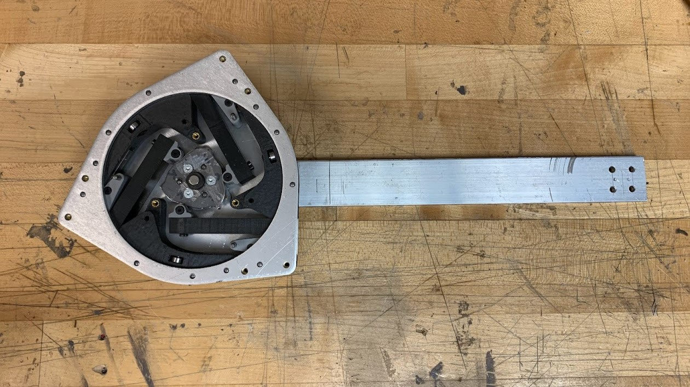

This study introduces a variable stiffness actuator with multiple cam mechanisms, designed for assisting individuals with limited ankle function during walking. It emphasizes the benefits of such actuators over traditional ones in mobility aid. The Variable Stiffness Spiral Cam Actuator (VS-SCA) is explained, focusing on its key components like cantilever beams, main cam mechanism, and Archimedean spiral cam. Design, fabrication, and validation processes are summarized, including considerations for system design, beam, and cam design. The experimental results demonstrate that the VS-SCA offers stiffness ranging from 20 to 75 Nm/rad for dorsiflexion, crucial for aiding ankle movement during walking, while allowing for low stiffness (4 - 12 Nm/rad) during plantarflexion to avoid hindering natural ankle motion.

This study presents the design and performance analysis of a novel actuator incorporating a 90 KV BLDC motor driving a gearbox with a 9:1 overall reduction ratio. The actuator features a unique combination of components, including a 3:1 belt reduction and a 3:1 planetary gearbox, distributed across two stages of reduction. With a total weight of 0.85 kg, including the controller, the actuator offers impressive force generation capabilities of up to 275 N or 16 Nm of hip torque at a current of 10 A. Notably, a Slack Enabling Mechanism facilitates precise force control of the cable without requiring external balancing forces, enhancing the actuator's versatility and usability across various applications.

The 19-DOF Humanoid Robot was created as a functional tool for human tool interaction and environments, while also serving as an experimental platform for the study of bipedal locomotion and other areas of robotics research. Manufactured entirely through 3D printing technology within the Product Innovation Lab, the robot was designed and developed by a team of three experts.

The Recirculating Aquaculture System (RAS) offers a high level of control over the environmental conditions of the aquaculture system, thereby enhancing the efficiency and sustainability of fish farming practices. In this research project, I contributed to the creation of a Recirculating Aquaculture System prototype and integrated monitoring system for optimal fish farming. The prototype's experimental results indicate that our filtration system significantly improves water quality and maintains stable conditions conducive to fish health and growth.